PICK UP
訪問鍼灸マッサージ
大阪で訪問鍼灸マッサージをお探しの方へ
通院が難しくなってからも、身体のケアをあきらめないために。訪問鍼灸マッサージの仕組みや医療保険について、はじめての方にもわかりやすくご紹介します。
続きを読む エリア別川崎市・横浜市の訪問鍼灸マッサージ｜宮前区・高津区・都筑区・青葉区送り迎えの都合がつかなくなっても、家で体のケアを続けられます続きを読む
エリア別川崎市・横浜市の訪問鍼灸マッサージ｜宮前区・高津区・都筑区・青葉区送り迎えの都合がつかなくなっても、家で体のケアを続けられます続きを読む
 エリア別世田谷区の訪問鍼灸マッサージ｜二子玉川の玉川院からうかがいます通院がむずかしくなっても、住み慣れた家で体のケアを続けられます続きを読む
エリア別世田谷区の訪問鍼灸マッサージ｜二子玉川の玉川院からうかがいます通院がむずかしくなっても、住み慣れた家で体のケアを続けられます続きを読む
 はじめての方へ訪問鍼灸マッサージのよくある疑問｜料金・同意書・制度から記事を探す制度や段取りの疑問から、読みたい記事を見つけるための索引です続きを読む
はじめての方へ訪問鍼灸マッサージのよくある疑問｜料金・同意書・制度から記事を探す制度や段取りの疑問から、読みたい記事を見つけるための索引です続きを読む
 症状別のケア持病や体の状態から探す｜訪問鍼灸マッサージで何ができるのか心臓や腎臓のこと、飲み込み、麻痺、医療的ケアのある方へ続きを読む
症状別のケア持病や体の状態から探す｜訪問鍼灸マッサージで何ができるのか心臓や腎臓のこと、飲み込み、麻痺、医療的ケアのある方へ続きを読む
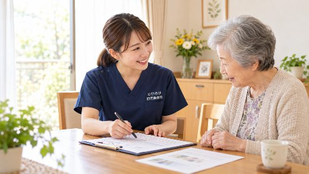
症状別のケア訪問鍼灸マッサージで相談の多い症状｜どこがつらいかで記事を探す部位ごとに、これまでいただいてきたご相談をまとめました続きを読む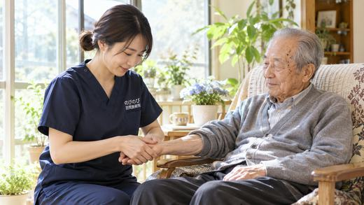
症状別のケア茨木市で脳梗塞の後遺症ケアをお探しの方へ｜介助のしやすさまで考える茨木市全域へ。ご家族の手が足りなくなる前に続きを読む 症状別のケア箕面市で五十肩・肩が上がらない方へ｜夜の痛みと訪問鍼灸マッサージ箕面市全域へ。夜に肩が痛んで目が覚める方に続きを読む
症状別のケア箕面市で五十肩・肩が上がらない方へ｜夜の痛みと訪問鍼灸マッサージ箕面市全域へ。夜に肩が痛んで目が覚める方に続きを読む
 症状別のケア豊中市で脳梗塞の後遺症ケアをお探しの方へ｜麻痺・こわばりの訪問鍼灸豊中市全域へ。使いすぎている側にも目を向けて続きを読む
症状別のケア豊中市で脳梗塞の後遺症ケアをお探しの方へ｜麻痺・こわばりの訪問鍼灸豊中市全域へ。使いすぎている側にも目を向けて続きを読む
 症状別のケア豊中市でパーキンソン病の在宅ケアをお探しの方へ｜訪問鍼灸マッサージ豊中市全域へ。ケアプランに入っていない体のこわばりに続きを読む
症状別のケア豊中市でパーキンソン病の在宅ケアをお探しの方へ｜訪問鍼灸マッサージ豊中市全域へ。ケアプランに入っていない体のこわばりに続きを読む
 症状別のケア高槻市で脳梗塞の後遺症ケアをお探しの方へ｜麻痺・こわばりの訪問鍼灸高槻市全域へ。退院後の「空白」を埋めるために続きを読む
症状別のケア高槻市で脳梗塞の後遺症ケアをお探しの方へ｜麻痺・こわばりの訪問鍼灸高槻市全域へ。退院後の「空白」を埋めるために続きを読む
 症状別のケア高槻市でパーキンソン病の在宅ケアをお探しの方へ｜訪問鍼灸マッサージ高槻市全域へ。薬が効いている時間に合わせて伺います続きを読む
症状別のケア高槻市でパーキンソン病の在宅ケアをお探しの方へ｜訪問鍼灸マッサージ高槻市全域へ。薬が効いている時間に合わせて伺います続きを読む
 症状別のケア高槻市で五十肩・肩が上がらない方へ｜自宅で受ける訪問鍼灸マッサージ高槻市全域へ。着替えと洗髪がつらい方に続きを読む
症状別のケア高槻市で五十肩・肩が上がらない方へ｜自宅で受ける訪問鍼灸マッサージ高槻市全域へ。着替えと洗髪がつらい方に続きを読む
 症状別のケア高槻市の坐骨神経痛・腰から足のしびれ｜通わずに受ける訪問鍼灸マッサージ高槻市全域へ。腰よりも足がつらい方に続きを読む
症状別のケア高槻市の坐骨神経痛・腰から足のしびれ｜通わずに受ける訪問鍼灸マッサージ高槻市全域へ。腰よりも足がつらい方に続きを読む
 症状別のケア高槻市で膝の痛みにお悩みの方へ｜通わずに続ける訪問鍼灸マッサージ高槻市全域へ。立ち座りがつらくなってきた方に続きを読む
症状別のケア高槻市で膝の痛みにお悩みの方へ｜通わずに続ける訪問鍼灸マッサージ高槻市全域へ。立ち座りがつらくなってきた方に続きを読む
 エリア別高槻市の訪問鍼灸マッサージ｜通院がつらくなっても、家で続けられます高槻市全域へ、国家資格者が訪問続きを読む
エリア別高槻市の訪問鍼灸マッサージ｜通院がつらくなっても、家で続けられます高槻市全域へ、国家資格者が訪問続きを読む
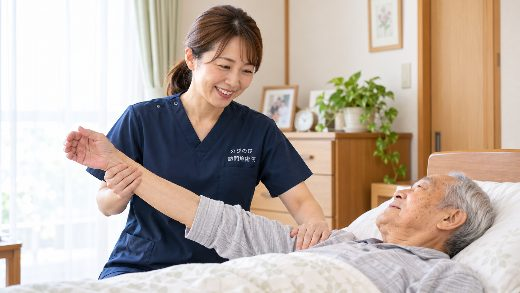
症状別のケア円背の方の座り方・寝かせ方｜車いす・食事・ベッドの支え方ご家族と介護される方へ、毎日の姿勢の工夫続きを読む 症状別のケア骨がもろくなると背中は丸くなる？骨粗鬆症と円背のつながり気づかないうちの圧迫骨折と、そのあとに残るつらさ続きを読む
症状別のケア骨がもろくなると背中は丸くなる？骨粗鬆症と円背のつながり気づかないうちの圧迫骨折と、そのあとに残るつらさ続きを読む
 症状別のケア亀背は治りますか？曲がった背中が戻るかと、今できること元に戻すことと、これ以上進ませないことは別の話です続きを読む
症状別のケア亀背は治りますか？曲がった背中が戻るかと、今できること元に戻すことと、これ以上進ませないことは別の話です続きを読む
 症状別のケア円背とは？背中が丸くなる原因と、放置したときに起こることえんぱいと読みます。暮らしへの影響と、家でできること続きを読む
症状別のケア食べてもおいしくないと言うご家族へ「味がしない」の多くは、においの問題です続きを読む
症状別のケア円背とは？背中が丸くなる原因と、放置したときに起こることえんぱいと読みます。暮らしへの影響と、家でできること続きを読む
症状別のケア食べてもおいしくないと言うご家族へ「味がしない」の多くは、においの問題です続きを読む 症状別のケア入れ歯が合わなくなってきたご家族へ入れ歯を直すのは歯科。当院は触りません続きを読む
症状別のケア入れ歯が合わなくなってきたご家族へ入れ歯を直すのは歯科。当院は触りません続きを読む 症状別のケアお薬の種類が多いご家族へ｜ふらつきと薬増やす減らすを決めるのは、主治医と薬剤師です続きを読む
症状別のケアお薬の種類が多いご家族へ｜ふらつきと薬増やす減らすを決めるのは、主治医と薬剤師です続きを読む 症状別のケア着替えがつらい方へ｜順番の工夫と手当て着るときは動かしにくい側から、脱ぐときは動く側から続きを読む
症状別のケア着替えがつらい方へ｜順番の工夫と手当て着るときは動かしにくい側から、脱ぐときは動く側から続きを読む はじめての方へ働きながら親の介護をしているご家族へ付き添いのために休みを取らなくてすみます続きを読む
はじめての方へ働きながら親の介護をしているご家族へ付き添いのために休みを取らなくてすみます続きを読む 症状別のケアてんかん発作のある高齢のご家族へ発作を止める施術は、いたしません続きを読むはじめての方へ訪問入浴と訪問鍼灸は同じ日に使える？入浴が先、施術があと。30分あけると楽です続きを読む
症状別のケアてんかん発作のある高齢のご家族へ発作を止める施術は、いたしません続きを読むはじめての方へ訪問入浴と訪問鍼灸は同じ日に使える？入浴が先、施術があと。30分あけると楽です続きを読む 料金・保険・制度成年後見人がついている方の訪問鍼灸契約の代理と、体に触れる同意は別のもの続きを読む
料金・保険・制度成年後見人がついている方の訪問鍼灸契約の代理と、体に触れる同意は別のもの続きを読む 症状別のケア気管切開・在宅人工呼吸のご家族へカニューレと首まわりには触れません続きを読む
症状別のケア気管切開・在宅人工呼吸のご家族へカニューレと首まわりには触れません続きを読む 症状別のケア人工肛門（ストーマ）のあるご家族へ装具の上から押さない、うつ伏せにしない続きを読む
症状別のケア人工肛門（ストーマ）のあるご家族へ装具の上から押さない、うつ伏せにしない続きを読む 症状別のケア目が見えにくいご家族への訪問鍼灸どけた物は、終わったら元の場所へ続きを読む
症状別のケア目が見えにくいご家族への訪問鍼灸どけた物は、終わったら元の場所へ続きを読む 症状別のケア耳が聞こえにくいご家族への訪問鍼灸合図を先に決めてから、施術に入ります続きを読む症状別のケアALS・筋ジストロフィーの方の体のケア強くもむ、頑張らせる、はしません続きを読む症状別のケア脊髄損傷・対麻痺のある方の体のケア感覚のない部位には、お灸を使いません続きを読む
症状別のケア耳が聞こえにくいご家族への訪問鍼灸合図を先に決めてから、施術に入ります続きを読む症状別のケアALS・筋ジストロフィーの方の体のケア強くもむ、頑張らせる、はしません続きを読む症状別のケア脊髄損傷・対麻痺のある方の体のケア感覚のない部位には、お灸を使いません続きを読む はじめての方へ停電・大雨のときの在宅療養と訪問の休止体のケアより先に、確かめたい機器があります続きを読む
はじめての方へ停電・大雨のときの在宅療養と訪問の休止体のケアより先に、確かめたい機器があります続きを読む 症状別のケア胃ろう・経管栄養の方の体のケア管には触れず、体まわりのケアに徹します続きを読む
症状別のケア胃ろう・経管栄養の方の体のケア管には触れず、体まわりのケアに徹します続きを読む はじめての方へ施術中に急な体調変化があったら？安全と連絡体制備えておくことが、安心につながる続きを読むはじめての方へ家に来てもらうのが不安な方へ｜部屋の準備特別な準備は、ほとんど要りません続きを読む
はじめての方へ施術中に急な体調変化があったら？安全と連絡体制備えておくことが、安心につながる続きを読むはじめての方へ家に来てもらうのが不安な方へ｜部屋の準備特別な準備は、ほとんど要りません続きを読む 症状別のケア巻き爪・肥厚した爪など足のトラブルに爪の処置は医療へ、歩きやすさは足元のケアへ続きを読む
症状別のケア巻き爪・肥厚した爪など足のトラブルに爪の処置は医療へ、歩きやすさは足元のケアへ続きを読む 症状別のケア花粉の時期のだるさ・体の重さと在宅ケア「花粉だから仕方ない」で片づける前に続きを読む
症状別のケア花粉の時期のだるさ・体の重さと在宅ケア「花粉だから仕方ない」で片づける前に続きを読む 症状別のケア車いすで過ごす時間が長い方の体のケア同じ姿勢のつらさは、言葉になりにくい続きを読む
症状別のケア車いすで過ごす時間が長い方の体のケア同じ姿勢のつらさは、言葉になりにくい続きを読む はじめての方へ年末年始・お盆の体調管理と施術の続け方休みに入る前に、予定を組み直しておく続きを読むはじめての方へ多職種連携｜訪問看護・訪問診療との情報共有抱え込まずに、少しずつ持ち寄る続きを読む
はじめての方へ年末年始・お盆の体調管理と施術の続け方休みに入る前に、予定を組み直しておく続きを読むはじめての方へ多職種連携｜訪問看護・訪問診療との情報共有抱え込まずに、少しずつ持ち寄る続きを読む 料金・保険・制度ケアマネ向け｜訪問鍼灸の連携と紹介の流れ区分支給限度基準額とは、別の枠です続きを読む
料金・保険・制度ケアマネ向け｜訪問鍼灸の連携と紹介の流れ区分支給限度基準額とは、別の枠です続きを読む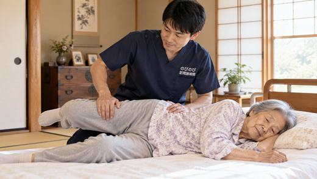
症状別のケアむせ・飲み込みの衰えと誤嚥性肺炎｜家でできる工夫できることと、できないことを正直に続きを読む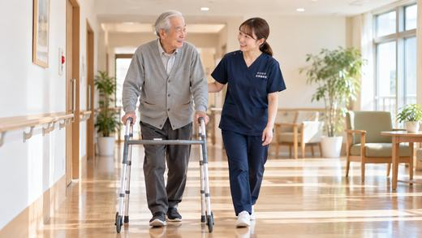
症状別のケア杖や歩行器を使い始めるとき｜合う道具と、使える体づくり道具の高さが合えば、痛みは減らせます続きを読む 症状別のケア秋の寒暖差で肩こり・冷えがつらい方へ｜訪問鍼灸朝晩の冷え込みでこわばる体に続きを読む
症状別のケア秋の寒暖差で肩こり・冷えがつらい方へ｜訪問鍼灸朝晩の冷え込みでこわばる体に続きを読む
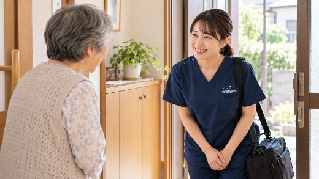
はじめての方へ訪問鍼灸マッサージの無料体験は何をする？当日の流れ問診から短いお試しまで、20〜30分ほどです続きを読むはじめての方へ訪問時の様子はどう伝わる？家族や医師との情報共有のしくみ立ち会えなくても、その日の様子はお伝えできます続きを読む
はじめての方へ入退院時の連携｜退院前から在宅の鍼灸ケアへつなぐ退院してから探すより、入院中に一言添えておくほうが早く進みます続きを読む
 はじめての方へケアマネの方へ｜訪問鍼灸マッサージ紹介の流れと、その後電話1本から。書類をそろえてからでなくて構いません続きを読む
はじめての方へケアマネの方へ｜訪問鍼灸マッサージ紹介の流れと、その後電話1本から。書類をそろえてからでなくて構いません続きを読む
 はじめての方へ【ケアマネ向け】訪問鍼灸マッサージをすすめる判断基準限度額とは別枠。どんな利用者に向いているかを整理しました続きを読む
はじめての方へ【ケアマネ向け】訪問鍼灸マッサージをすすめる判断基準限度額とは別枠。どんな利用者に向いているかを整理しました続きを読む
 料金・保険・制度訪問鍼灸マッサージの料金と領収書｜医療費控除の対象になるか毎回いくら、月にいくら。領収書の残し方と、控除の考え方続きを読む
料金・保険・制度訪問鍼灸マッサージの料金と領収書｜医療費控除の対象になるか毎回いくら、月にいくら。領収書の残し方と、控除の考え方続きを読む
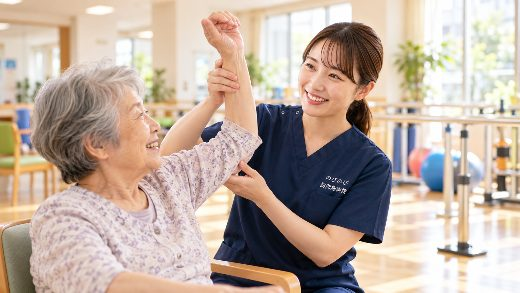
はじめての方へ訪問リハビリが終了になった後の在宅ケア｜訪問鍼灸という選択制度の区切りで終わったあと、体を落とさないために続きを読む 症状別のケアあちこち痛い・複数の不調があるとき、どこまでみてもらえる？一か所だけでなく、体全体を見て優先順位をつけて進めます続きを読むはじめての方へ訪問鍼灸マッサージの効果はいつ実感できる？段階ごとの目安一度で変わるものではありません。その日の変化と、続けて出てくる変化続きを読む
 はじめての方へ認知症で本人の同意がむずかしいとき｜訪問鍼灸の始め方と手続きご家族が窓口となって進められます。書類の準備も当院が段取りします続きを読む
はじめての方へ高齢の親の痛み・しびれ・歩きにくさ、何科に相談すればいい？症状ごとの受診先の目安と、通院がつらくなってきたときの選び方続きを読む
はじめての方へうちの親は訪問鍼灸マッサージの対象になる？3分セルフチェック症状・通院・同意書の3つで、当てはまりを順番に確かめます続きを読む
はじめての方へいまの訪問マッサージ、切り替えてもいい？｜同意書と進め方切り替えは可能です。同意書の扱いと、期間が重ならない区切り方続きを読む
はじめての方へ認知症で本人の同意がむずかしいとき｜訪問鍼灸の始め方と手続きご家族が窓口となって進められます。書類の準備も当院が段取りします続きを読む
はじめての方へ高齢の親の痛み・しびれ・歩きにくさ、何科に相談すればいい？症状ごとの受診先の目安と、通院がつらくなってきたときの選び方続きを読む
はじめての方へうちの親は訪問鍼灸マッサージの対象になる？3分セルフチェック症状・通院・同意書の3つで、当てはまりを順番に確かめます続きを読む
はじめての方へいまの訪問マッサージ、切り替えてもいい？｜同意書と進め方切り替えは可能です。同意書の扱いと、期間が重ならない区切り方続きを読む
 症状別のケア首のこりから起こる頭痛（頸性頭痛）と在宅の鍼灸ケア頭痛そのものが対象ではありません。背景にある首・肩のこわばりに向き合います。続きを読む
症状別のケア寝て過ごす時間が長い方の肩甲骨・背中のはり｜在宅の鍼灸自分では手の届かない場所です。寝たままの姿勢で、肩甲骨まわりのこわばりをゆるめます。続きを読む
症状別のケア首のこりから起こる頭痛（頸性頭痛）と在宅の鍼灸ケア頭痛そのものが対象ではありません。背景にある首・肩のこわばりに向き合います。続きを読む
症状別のケア寝て過ごす時間が長い方の肩甲骨・背中のはり｜在宅の鍼灸自分では手の届かない場所です。寝たままの姿勢で、肩甲骨まわりのこわばりをゆるめます。続きを読む
 症状別のケア五十肩とは違う肩のトラブル｜腱板の傷みと在宅ケア傷んだ腱板は元どおりにできません。肩まわりのこわばりをゆるめ、動かしやすさを保つ部分を進めます。続きを読む
症状別のケア五十肩とは違う肩のトラブル｜腱板の傷みと在宅ケア傷んだ腱板は元どおりにできません。肩まわりのこわばりをゆるめ、動かしやすさを保つ部分を進めます。続きを読む
 症状別のケア肘の痛み（テニス肘など）・動かしにくさと在宅の鍼灸ケア原因そのものは取り除けません。かばって固くなった前腕や肩まわりをゆるめる部分を段取りします。続きを読む
症状別のケア肘の痛み（テニス肘など）・動かしにくさと在宅の鍼灸ケア原因そのものは取り除けません。かばって固くなった前腕や肩まわりをゆるめる部分を段取りします。続きを読む
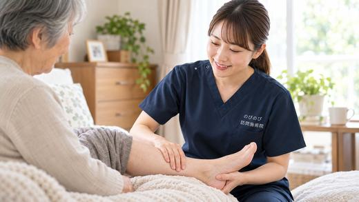
症状別のケアリンパ浮腫・腕や脚のむくみ｜医療を土台にした在宅の鍼灸むくみ自体は保険の対象外です。かばって固くなる肩・腰・脚のこわばりに向き合います。続きを読む 症状別のケア胸郭出口症候群・腕や手のしびれ｜在宅でできる鍼灸ケア圧迫そのものは取り除けません。首・肩・鎖骨まわりのこわばりをゆるめる部分をお手伝いします。続きを読む
症状別のケアばね指・指が引っかかる方へ｜曲げ伸ばしのつらさと在宅鍼灸腱の炎症そのものは治せません。指から手のひら、前腕のこわばりをゆるめる部分を引き受けます。続きを読む
症状別のケア胸郭出口症候群・腕や手のしびれ｜在宅でできる鍼灸ケア圧迫そのものは取り除けません。首・肩・鎖骨まわりのこわばりをゆるめる部分をお手伝いします。続きを読む
症状別のケアばね指・指が引っかかる方へ｜曲げ伸ばしのつらさと在宅鍼灸腱の炎症そのものは治せません。指から手のひら、前腕のこわばりをゆるめる部分を引き受けます。続きを読む
 症状別のケア足底腱膜炎・かかとや足裏の痛み｜歩きはじめのつらさに診断と治療方針は医師のもとで。かばって固くなった足まわりをゆるめる部分をお手伝いします。続きを読む
症状別のケア足底腱膜炎・かかとや足裏の痛み｜歩きはじめのつらさに診断と治療方針は医師のもとで。かばって固くなった足まわりをゆるめる部分をお手伝いします。続きを読む
 料金・保険・制度訪問鍼灸マッサージの同意書は何か月で更新？有効期間と手続き目安はおよそ6か月。書式の用意と医療機関とのやりとりは当院で引き受けます。続きを読む
料金・保険・制度訪問鍼灸マッサージの支払い方法・集金のしくみがわかる毎回その都度ではなく、ひと月分をまとめて。金額はあらかじめ決まっています。続きを読む
症状別のケア変形性肩関節症・肩が上がらない方へ｜在宅の鍼灸ケアすり減った軟骨は戻せません。かばって固くなった肩・首・肩甲骨まわりをゆるめる部分を進めます。続きを読む
料金・保険・制度訪問鍼灸マッサージの同意書は何か月で更新？有効期間と手続き目安はおよそ6か月。書式の用意と医療機関とのやりとりは当院で引き受けます。続きを読む
料金・保険・制度訪問鍼灸マッサージの支払い方法・集金のしくみがわかる毎回その都度ではなく、ひと月分をまとめて。金額はあらかじめ決まっています。続きを読む
症状別のケア変形性肩関節症・肩が上がらない方へ｜在宅の鍼灸ケアすり減った軟骨は戻せません。かばって固くなった肩・首・肩甲骨まわりをゆるめる部分を進めます。続きを読む
 症状別のケア変形性頸椎症で首の痛み・動かしにくさがある方へ｜訪問鍼灸骨の変化そのものは戻せません。首・肩・背中のこわばりをゆるめ、動かせる範囲を保つ部分を引き受けます。続きを読む
症状別のケア変形性頸椎症で首の痛み・動かしにくさがある方へ｜訪問鍼灸骨の変化そのものは戻せません。首・肩・背中のこわばりをゆるめ、動かせる範囲を保つ部分を引き受けます。続きを読む
 症状別のケア手首の骨折あとのこわばり・動かしにくさ｜在宅でできるケア治療と経過の管理は主治医が中心。手首・指・前腕のこわばりをゆるめる部分をお手伝いします。続きを読む
症状別のケア手首の骨折あとのこわばり・動かしにくさ｜在宅でできるケア治療と経過の管理は主治医が中心。手首・指・前腕のこわばりをゆるめる部分をお手伝いします。続きを読む
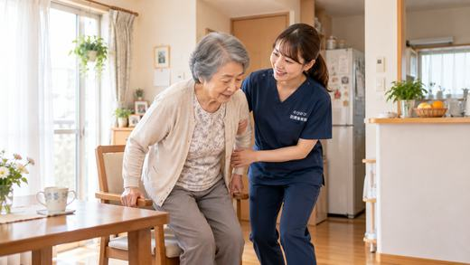
症状別のケア足の付け根の骨折（大腿骨）のあと｜回復期を支える在宅ケア治療とリハビリが土台。それに伴って固くなる筋肉をゆるめ、動かしやすさを保つ部分を引き受けます。続きを読む症状別のケア立ちくらみ・起立性低血圧でふらつく方へ｜在宅でのケア原因の見きわめとお薬の調整は医師の役割。めぐりを整え、安全な動き方を身につける部分を進めます。続きを読む
症状別のケアわき腹・背中の刺すような痛み｜肋間神経痛と訪問鍼灸胸の痛みはまず医療機関で確かめて。そのうえで胸まわりのこわばりをゆるめる部分を段取りします。続きを読む
 症状別のケア首が下がる・体が前に倒れる（姿勢の変化）｜訪問鍼灸マッサージ姿勢そのものは戻せません。固くなった首・背中・体幹をゆるめ、今ある動きを保つ部分をお手伝いします。続きを読む
症状別のケア首が下がる・体が前に倒れる（姿勢の変化）｜訪問鍼灸マッサージ姿勢そのものは戻せません。固くなった首・背中・体幹をゆるめ、今ある動きを保つ部分をお手伝いします。続きを読む
 症状別のケアだるさ・倦怠感が抜けない高齢の方へ｜在宅でできるケア倦怠感そのものは保険の対象ではありません。その背景にある体のこわばりや冷えに向き合います。続きを読む
症状別のケアだるさ・倦怠感が抜けない高齢の方へ｜在宅でできるケア倦怠感そのものは保険の対象ではありません。その背景にある体のこわばりや冷えに向き合います。続きを読む
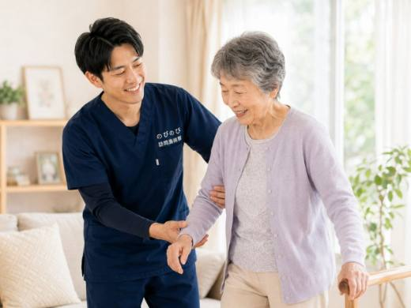
症状別のケア骨折後の筋力低下・廃用症候群に｜訪問鍼灸でできること骨折後などに残る痛みは、医師が治療の必要を認めれば医療保険の対象で、保険は鍼灸で算定し、1割負担なら1回およそ395円続きを読む症状別のケア退院直後の在宅療養を支える｜家に戻った家族と訪問鍼灸医師の同意にもとづく医療保険で、はり師・きゅう師の国家資格者が伺い、機能訓練も組み合わせます続きを読む
 症状別のケアサルコペニア・ロコモを防ぐ在宅ケア｜訪問鍼灸マッサージ訪問鍼灸マッサージでは、慢性的な痛みやこわばりで医師が治療の必要を認めた方に、鍼やお灸で痛みを和らげ、体を動かすケアを組み合わせます続きを読む
はじめての方へ訪問鍼灸マッサージは土日・祝日・夜間も受けられる？「平日は家族が仕事で立ち会えない」「日中は本人がデイサービスに行っている」続きを読む
症状別のケアサルコペニア・ロコモを防ぐ在宅ケア｜訪問鍼灸マッサージ訪問鍼灸マッサージでは、慢性的な痛みやこわばりで医師が治療の必要を認めた方に、鍼やお灸で痛みを和らげ、体を動かすケアを組み合わせます続きを読む
はじめての方へ訪問鍼灸マッサージは土日・祝日・夜間も受けられる？「平日は家族が仕事で立ち会えない」「日中は本人がデイサービスに行っている」続きを読む
 はじめての方へ訪問鍼灸マッサージ当日のギモン｜部屋・服装・お薬・同席訪問鍼灸マッサージの当日にご家庭で必要な準備は、横になれる場所、楽な服装、飲んでいるお薬の情報の三つくらいで、鍼やお灸などの道具は国家資格をもつ施術者がすべて持参し、費用は医療保険で1回3,950円・1割の方で約395円が目安です続きを読む
料金・保険・制度訪問診療・看護・リハビリ・介護・鍼灸はどう選ぶ？組み合わせ方在宅で受けられる主なサービスは、訪問診療、訪問看護、訪問リハビリ、訪問介護（ヘルパー）、訪問鍼灸マッサージの5つです続きを読む
はじめての方へ訪問鍼灸マッサージ当日のギモン｜部屋・服装・お薬・同席訪問鍼灸マッサージの当日にご家庭で必要な準備は、横になれる場所、楽な服装、飲んでいるお薬の情報の三つくらいで、鍼やお灸などの道具は国家資格をもつ施術者がすべて持参し、費用は医療保険で1回3,950円・1割の方で約395円が目安です続きを読む
料金・保険・制度訪問診療・看護・リハビリ・介護・鍼灸はどう選ぶ？組み合わせ方在宅で受けられる主なサービスは、訪問診療、訪問看護、訪問リハビリ、訪問介護（ヘルパー）、訪問鍼灸マッサージの5つです続きを読む
 症状別のケア低栄養・食欲低下からフレイルを防ぐ在宅ケア｜訪問鍼灸食が細くなって元気がない、痩せてきた続きを読む
エリア別都島区で脳梗塞の後遺症ケア｜麻痺・こわばりの訪問鍼灸大阪市都島区で、脳梗塞・脳出血のあとの手足の麻痺やこわばり、つっぱりに向き合うご本人・ご家族へ続きを読む
症状別のケア低栄養・食欲低下からフレイルを防ぐ在宅ケア｜訪問鍼灸食が細くなって元気がない、痩せてきた続きを読む
エリア別都島区で脳梗塞の後遺症ケア｜麻痺・こわばりの訪問鍼灸大阪市都島区で、脳梗塞・脳出血のあとの手足の麻痺やこわばり、つっぱりに向き合うご本人・ご家族へ続きを読む
 症状別のケア背骨が左右に曲がる（側弯症）の痛み・姿勢｜訪問鍼灸マッサージ曲がりそのものは矯正しません。引っぱられてこわばった背中・腰をゆるめる部分を引き受けます。続きを読む
症状別のケア肘の曲げ伸ばしがつらい（変形性肘関節症）｜訪問鍼灸マッサージ関節の変形は戻せません。肘まわりと腕のこわばりをゆるめ、動かしやすさを支える部分を進めます。続きを読む
症状別のケア背骨が左右に曲がる（側弯症）の痛み・姿勢｜訪問鍼灸マッサージ曲がりそのものは矯正しません。引っぱられてこわばった背中・腰をゆるめる部分を引き受けます。続きを読む
症状別のケア肘の曲げ伸ばしがつらい（変形性肘関節症）｜訪問鍼灸マッサージ関節の変形は戻せません。肘まわりと腕のこわばりをゆるめ、動かしやすさを支える部分を進めます。続きを読む
 症状別のケア足首の痛み・動かしにくさ｜変形性足関節症と訪問鍼灸関節の変形は戻せません。足首とふくらはぎのこわばりをゆるめ、歩きやすさを支える部分をお手伝いします。続きを読む
症状別のケア足首の痛み・動かしにくさ｜変形性足関節症と訪問鍼灸関節の変形は戻せません。足首とふくらはぎのこわばりをゆるめ、歩きやすさを支える部分をお手伝いします。続きを読む
 症状別のケアお尻の奥・骨盤まわりの痛み｜仙腸関節の不調と訪問鍼灸原因の見きわめは整形外科の役割。骨盤まわりのこわばりをゆるめ、動き出しを楽にする部分を引き受けます。続きを読む
症状別のケア指先の関節の痛みや変形（ヘバーデン結節）｜訪問鍼灸マッサージ変形そのものは戻せません。手と腕のこわばりをゆるめ、使いやすさを保つ部分を段取りします。続きを読む
症状別のケアお尻の奥・骨盤まわりの痛み｜仙腸関節の不調と訪問鍼灸原因の見きわめは整形外科の役割。骨盤まわりのこわばりをゆるめ、動き出しを楽にする部分を引き受けます。続きを読む
症状別のケア指先の関節の痛みや変形（ヘバーデン結節）｜訪問鍼灸マッサージ変形そのものは戻せません。手と腕のこわばりをゆるめ、使いやすさを保つ部分を段取りします。続きを読む
 症状別のケア足の指の付け根の痛み・しびれ｜モートン病と訪問鍼灸原因の見きわめは整形外科の役割。足裏やふくらはぎをゆるめ、足への負担を減らす部分をお手伝いします。続きを読む
症状別のケア足のだるさ・むくみ（下肢静脈瘤）｜訪問鍼灸マッサージ血管の治療は医療機関の役割。ふくらはぎのこわばりをゆるめ、めぐりを支える部分を引き受けます。続きを読む
症状別のケア足の指の付け根の痛み・しびれ｜モートン病と訪問鍼灸原因の見きわめは整形外科の役割。足裏やふくらはぎをゆるめ、足への負担を減らす部分をお手伝いします。続きを読む
症状別のケア足のだるさ・むくみ（下肢静脈瘤）｜訪問鍼灸マッサージ血管の治療は医療機関の役割。ふくらはぎのこわばりをゆるめ、めぐりを支える部分を引き受けます。続きを読む
 症状別のケアあごの痛み・口の開けにくさ（顎関節症）｜訪問鍼灸マッサージあごの関節そのものは歯科の役割。まわりの筋肉と首・肩のこわばりを、自宅でゆるめていきます。続きを読む
症状別のケアあごの痛み・口の開けにくさ（顎関節症）｜訪問鍼灸マッサージあごの関節そのものは歯科の役割。まわりの筋肉と首・肩のこわばりを、自宅でゆるめていきます。続きを読む
 症状別のケア高齢の方の足首の痛み・捻挫あとの不安定さ｜自宅でできるケア捻挫のあとに足首がぐらつく・むくむといった不安定さは、放っておくと歩き方が変わり、転びやすさにつながることがあります続きを読む
症状別のケア高齢者の手足の冷えを芯から温める｜お灸を活かす訪問鍼灸手足の冷えや体の芯の冷えには、体を温めてめぐりを整える訪問鍼灸マッサージがお手伝いできます続きを読む
症状別のケア高齢の方の足首の痛み・捻挫あとの不安定さ｜自宅でできるケア捻挫のあとに足首がぐらつく・むくむといった不安定さは、放っておくと歩き方が変わり、転びやすさにつながることがあります続きを読む
症状別のケア高齢者の手足の冷えを芯から温める｜お灸を活かす訪問鍼灸手足の冷えや体の芯の冷えには、体を温めてめぐりを整える訪問鍼灸マッサージがお手伝いできます続きを読む
 症状別のケア認知症で落ち着かない・そわそわする時期の体のケア当院は通院がむずかしい方のご自宅に伺い、医療保険（鍼灸で算定）で施術を行います続きを読む
症状別のケア認知症で落ち着かない・そわそわする時期の体のケア当院は通院がむずかしい方のご自宅に伺い、医療保険（鍼灸で算定）で施術を行います続きを読む
 症状別のケア寝つけない・夜中に目が覚める｜睡眠の悩みと在宅のケアそんな睡眠の悩みをかかえる高齢のご本人・ご家族へ続きを読む
症状別のケア寝つけない・夜中に目が覚める｜睡眠の悩みと在宅のケアそんな睡眠の悩みをかかえる高齢のご本人・ご家族へ続きを読む
 症状別のケア首・肩・腕のしびれや痛み｜頸肩腕症候群と訪問鍼灸マッサージ頸肩腕症候群は、はり・きゅうの療養費で認められている6つの病名の一つで、医師が治療の必要を認めた慢性の症状であれば、医療保険を使ってご自宅で施術を受けられます続きを読む
症状別のケア首・肩・腕のしびれや痛み｜頸肩腕症候群と訪問鍼灸マッサージ頸肩腕症候群は、はり・きゅうの療養費で認められている6つの病名の一つで、医師が治療の必要を認めた慢性の症状であれば、医療保険を使ってご自宅で施術を受けられます続きを読む
 症状別のケア脳梗塞後の手足のつっぱり・こわばり（痙縮）と在宅の鍼灸医師が必要と認めた慢性の痛みやこわばりなら、はり・きゅうで医療保険が使え、1種類の施術で1回あたり総額3,950円、1割負担なら約395円続きを読む
症状別のケア脳梗塞後の手足のつっぱり・こわばり（痙縮）と在宅の鍼灸医師が必要と認めた慢性の痛みやこわばりなら、はり・きゅうで医療保険が使え、1種類の施術で1回あたり総額3,950円、1割負担なら約395円続きを読む
 症状別のケア変形性膝関節症で膝が痛い方へ｜訪問鍼灸の在宅ケアと料金変形性膝関節症で膝が痛む方は、通院がむずかしくても訪問の鍼灸で在宅ケアを受けられます続きを読む
症状別のケア変形性膝関節症で膝が痛い方へ｜訪問鍼灸の在宅ケアと料金変形性膝関節症で膝が痛む方は、通院がむずかしくても訪問の鍼灸で在宅ケアを受けられます続きを読む
 症状別のケア高血圧のある方の肩こり・不眠｜注意点つきの在宅鍼灸ケア高血圧のある方は、肩や首のこり、頭の重さ、寝つきの悪さ、こわばりなどに悩むことが少なくありません続きを読む
症状別のケア高血圧のある方の肩こり・不眠｜注意点つきの在宅鍼灸ケア高血圧のある方は、肩や首のこり、頭の重さ、寝つきの悪さ、こわばりなどに悩むことが少なくありません続きを読む
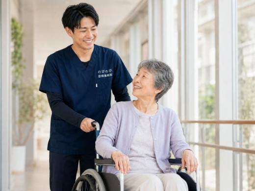
症状別のケア高齢者の貧血・ふらつき・息切れ｜自宅で受ける訪問鍼灸高齢の方の貧血は、めまい・ふらつき、少し動いただけの息切れ、抜けないだるさ、顔色の悪さなどとしてあらわれ、転倒のきっかけになることもあります続きを読む 症状別のケア甲状腺の不調によるだるさ・むくみ・冷え｜自宅で受ける訪問鍼灸甲状腺のはたらきが低下すると、抜けないだるさ、むくみ、手足の冷え、動きの重さ、気分の沈みなどがあらわれ、高齢の方では「歳のせい」と見過ごされがちです続きを読む
症状別のケア甲状腺の不調によるだるさ・むくみ・冷え｜自宅で受ける訪問鍼灸甲状腺のはたらきが低下すると、抜けないだるさ、むくみ、手足の冷え、動きの重さ、気分の沈みなどがあらわれ、高齢の方では「歳のせい」と見過ごされがちです続きを読む
 症状別のケア慢性腎臓病（CKD）のだるさ・むくみ｜自宅で受ける訪問鍼灸慢性腎臓病（CKD）があると、抜けないだるさ、足や顔のむくみ、冷え、夜間のトイレの近さなどで、家での暮らしがつらくなりがちです続きを読む
症状別のケア慢性腎臓病（CKD）のだるさ・むくみ｜自宅で受ける訪問鍼灸慢性腎臓病（CKD）があると、抜けないだるさ、足や顔のむくみ、冷え、夜間のトイレの近さなどで、家での暮らしがつらくなりがちです続きを読む
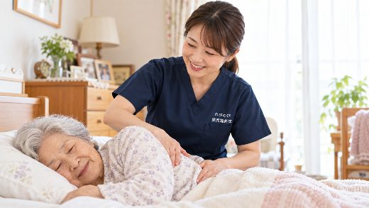
症状別のケアがんの在宅療養を支える体のケア｜痛み・こわばり・むくみがんとともに家で過ごす日々では、体のこわばりや痛み、むくみ、だるさ、眠りにくさなど、さまざまなつらさが重なりがちです続きを読む症状別のケア透析を受けている方の体のケア｜だるさ・むくみ・こむら返り透析に通う日々は、体にかかる負担も大きく、だるさやむくみ、足のつり（こむら返り）、手足の冷えなどに悩む方が少なくありません続きを読む
 症状別のケア心不全のむくみ・息切れ・だるさ｜自宅で受ける訪問鍼灸心不全があると、足のむくみ、少し動いただけの息切れ、抜けないだるさなどで、家での暮らしがつらくなりがちです続きを読む
症状別のケア心不全のむくみ・息切れ・だるさ｜自宅で受ける訪問鍼灸心不全があると、足のむくみ、少し動いただけの息切れ、抜けないだるさなどで、家での暮らしがつらくなりがちです続きを読む
 症状別のケア都島区で五十肩・肩の痛みにお悩みの方へ｜自宅で受ける訪問鍼灸腕が上がらない・夜間痛に、通わず自宅で続きを読む
症状別のケア都島区で五十肩・肩の痛みにお悩みの方へ｜自宅で受ける訪問鍼灸腕が上がらない・夜間痛に、通わず自宅で続きを読む
 症状別のケア淀川区で五十肩・肩の痛みにお悩みの方へ｜自宅で受ける訪問鍼灸腕が上がらない・夜間痛に、通わず自宅で続きを読む
症状別のケア北区で五十肩・肩の痛みにお悩みの方へ｜自宅で受ける訪問鍼灸腕が上がらない・夜間痛に、通わず自宅で続きを読む
症状別のケア淀川区で五十肩・肩の痛みにお悩みの方へ｜自宅で受ける訪問鍼灸腕が上がらない・夜間痛に、通わず自宅で続きを読む
症状別のケア北区で五十肩・肩の痛みにお悩みの方へ｜自宅で受ける訪問鍼灸腕が上がらない・夜間痛に、通わず自宅で続きを読む
 症状別のケア池田市で五十肩・肩の痛みにお悩みの方へ｜自宅で受ける訪問鍼灸腕が上がらない・夜間痛に、通わず自宅で続きを読む
症状別のケア伊丹市で五十肩・肩の痛みにお悩みの方へ｜自宅で受ける訪問鍼灸腕が上がらない・夜間痛に、通わず自宅で続きを読む
症状別のケア茨木市で五十肩・肩の痛みにお悩みの方へ｜自宅で受ける訪問鍼灸腕が上がらない・夜間痛に、通わず自宅で続きを読む
症状別のケア吹田市で五十肩・肩の痛みにお悩みの方へ｜自宅で受ける訪問鍼灸腕が上がらない・夜間痛に、通わず自宅で続きを読む
症状別のケア尼崎市で五十肩・肩の痛みにお悩みの方へ｜自宅で受ける訪問鍼灸腕が上がらない・夜間痛に、通わず自宅で続きを読む
症状別のケア池田市で五十肩・肩の痛みにお悩みの方へ｜自宅で受ける訪問鍼灸腕が上がらない・夜間痛に、通わず自宅で続きを読む
症状別のケア伊丹市で五十肩・肩の痛みにお悩みの方へ｜自宅で受ける訪問鍼灸腕が上がらない・夜間痛に、通わず自宅で続きを読む
症状別のケア茨木市で五十肩・肩の痛みにお悩みの方へ｜自宅で受ける訪問鍼灸腕が上がらない・夜間痛に、通わず自宅で続きを読む
症状別のケア吹田市で五十肩・肩の痛みにお悩みの方へ｜自宅で受ける訪問鍼灸腕が上がらない・夜間痛に、通わず自宅で続きを読む
症状別のケア尼崎市で五十肩・肩の痛みにお悩みの方へ｜自宅で受ける訪問鍼灸腕が上がらない・夜間痛に、通わず自宅で続きを読む
 症状別のケア旭区の坐骨神経痛・腰から足の痛み｜自宅で訪問鍼灸マッサージ通院がつらい方へ、家で受ける坐骨神経痛ケア続きを読む
症状別のケア旭区の坐骨神経痛・腰から足の痛み｜自宅で訪問鍼灸マッサージ通院がつらい方へ、家で受ける坐骨神経痛ケア続きを読む
 症状別のケア都島区の坐骨神経痛・腰から足の痛み｜自宅で訪問鍼灸マッサージ通院がつらい方へ、家で受ける坐骨神経痛ケア続きを読む
症状別のケア都島区の坐骨神経痛・腰から足の痛み｜自宅で訪問鍼灸マッサージ通院がつらい方へ、家で受ける坐骨神経痛ケア続きを読む
 症状別のケア摂津市の坐骨神経痛・腰から足の痛み｜自宅で訪問鍼灸マッサージ通院がつらい方へ、家で受ける坐骨神経痛ケア続きを読む
症状別のケア摂津市の坐骨神経痛・腰から足の痛み｜自宅で訪問鍼灸マッサージ通院がつらい方へ、家で受ける坐骨神経痛ケア続きを読む
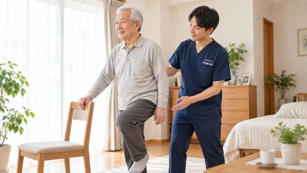
症状別のケア箕面市の坐骨神経痛・腰から足の痛み｜自宅で訪問鍼灸マッサージ通院がつらい方へ、家で受ける坐骨神経痛ケア続きを読む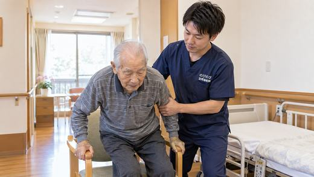
症状別のケア池田市の坐骨神経痛・腰から足の痛み｜自宅で訪問鍼灸マッサージ通院がつらい方へ、家で受ける坐骨神経痛ケア続きを読む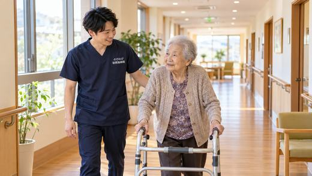
症状別のケア尼崎市の坐骨神経痛・腰から足の痛み｜自宅で訪問鍼灸マッサージ通院がつらい方へ、家で受ける坐骨神経痛ケア続きを読む症状別のケア茨木市の坐骨神経痛・腰から足の痛み｜自宅で訪問鍼灸マッサージ通院がつらい方へ、家で受ける坐骨神経痛ケア続きを読む
症状別のケア吹田市の坐骨神経痛・腰から足の痛み｜自宅で訪問鍼灸マッサージ通院がつらい方へ、家で受ける坐骨神経痛ケア続きを読む
 症状別のケア伊丹市で膝の痛みにお悩みの方へ｜自宅で受ける訪問鍼灸立ち座り・歩き始め・階段のつらさに続きを読む
症状別のケア伊丹市で膝の痛みにお悩みの方へ｜自宅で受ける訪問鍼灸立ち座り・歩き始め・階段のつらさに続きを読む
 症状別のケア摂津市で膝の痛みにお悩みの方へ｜自宅で受ける訪問鍼灸立ち座り・歩き始め・階段のつらさに続きを読む
症状別のケア箕面市で膝の痛みにお悩みの方へ｜自宅で受ける訪問鍼灸立ち座り・歩き始め・階段のつらさに続きを読む
症状別のケア摂津市で膝の痛みにお悩みの方へ｜自宅で受ける訪問鍼灸立ち座り・歩き始め・階段のつらさに続きを読む
症状別のケア箕面市で膝の痛みにお悩みの方へ｜自宅で受ける訪問鍼灸立ち座り・歩き始め・階段のつらさに続きを読む
 症状別のケア茨木市で膝の痛みにお悩みの方へ｜自宅で受ける訪問鍼灸立ち座り・歩き始め・階段のつらさに続きを読む
症状別のケア手首の痛み・腱鞘炎で家事や介護がつらい方へ｜訪問鍼灸使いすぎた手首を、自宅でいたわる続きを読む
症状別のケア起き上がり・立ち上がりがつらい｜下肢の筋力低下と訪問鍼灸在宅で続ける、足腰のこわばりケアと動作練習続きを読む
症状別のケア茨木市で膝の痛みにお悩みの方へ｜自宅で受ける訪問鍼灸立ち座り・歩き始め・階段のつらさに続きを読む
症状別のケア手首の痛み・腱鞘炎で家事や介護がつらい方へ｜訪問鍼灸使いすぎた手首を、自宅でいたわる続きを読む
症状別のケア起き上がり・立ち上がりがつらい｜下肢の筋力低下と訪問鍼灸在宅で続ける、足腰のこわばりケアと動作練習続きを読む
 症状別のケア人工関節の手術後、家での回復を支える｜訪問鍼灸という選択肢股関節・膝関節の術後、在宅リハビリを補う一手続きを読む
症状別のケア人工関節の手術後、家での回復を支える｜訪問鍼灸という選択肢股関節・膝関節の術後、在宅リハビリを補う一手続きを読む
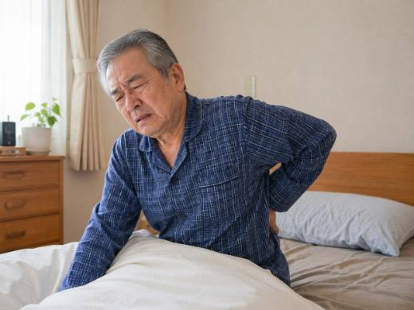
症状別のケアサルコペニアとロコモを防ぐ在宅ケア｜訪問鍼灸という選択肢加齢で筋力・体力が落ちてきた方へ。動きやすさを保つ在宅のケア続きを読む症状別のケア高齢者の頻尿・夜間の尿トラブルを自宅でケア｜訪問鍼灸夜間頻尿や尿の悩みで下がった暮らしの質に、在宅でそっと寄り添う続きを読む
症状別のケア顔面神経麻痺の後遺症を自宅でケア｜訪問鍼灸マッサージベル麻痺・ハント症候群のあとの動かしにくさに、在宅で寄り添う続きを読む
症状別のケア手指の関節のこわばり・痛みを自宅でケア｜訪問鍼灸マッサージ朝に指がこわばる・指の関節が痛む高齢のご本人とご家族へ続きを読む
症状別のケア床ずれ予防と寝返り介助｜在宅でできる褥瘡ケアと訪問鍼灸寝ている時間が長いご家族の「めぐり」と「動き」を支える続きを読む
症状別のケア終末期を住み慣れた家で穏やかに｜自宅で過ごす方の訪問鍼灸体のつらさをそっと和らげ、その方らしい時間を静かに支えるお手伝い続きを読む
症状別のケア低栄養・フレイルを防ぐ｜食が細くなった方へ訪問鍼灸マッサージ食べて動ける暮らしを、自宅で無理なく支えるお手伝い続きを読む
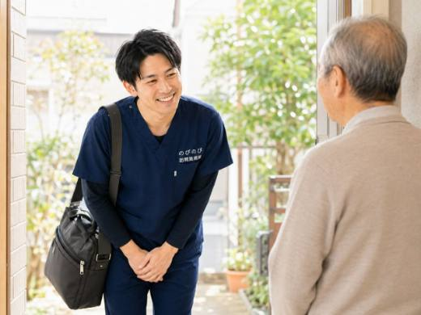
症状別のケア退院直後の在宅移行期を支える｜訪問鍼灸で体力を落とさない家に戻ったばかりの時期を、通院なしでそばから支える続きを読む症状別のケア慢性的な頭痛・頭の重さがつらい方へ｜訪問鍼灸マッサージ首肩のこりからくる頭痛を、自宅で無理なく和らげるお手伝い続きを読む
症状別のケア関節の拘縮・寝たきりを防ぎたい方へ｜自宅で訪問鍼灸マッサージ動かさない時間が、関節を固くします。早めのケアで、今ある動きを守っていきましょう。続きを読む
症状別のケア骨折後の筋力低下・廃用症候群が心配な方へ｜訪問鍼灸退院してから、家で体力や関節を落としたくない方とご家族へ続きを読む
 症状別のケア吹田市でパーキンソン病の在宅ケアをお探しの方へ｜訪問鍼灸こわばり・すくみ足・通院の不安に、自宅で寄り添うケアを続きを読む
症状別のケア吹田市でパーキンソン病の在宅ケアをお探しの方へ｜訪問鍼灸こわばり・すくみ足・通院の不安に、自宅で寄り添うケアを続きを読む
 症状別のケア淀川区の坐骨神経痛・腰の痛みに訪問鍼灸マッサージ通院せず自宅でケア続きを読む
症状別のケアむずむず脚症候群で夜眠れない方へ｜訪問鍼灸夜の脚のむずむずと、休みやすさへの一助続きを読む
症状別のケア淀川区の坐骨神経痛・腰の痛みに訪問鍼灸マッサージ通院せず自宅でケア続きを読む
症状別のケアむずむず脚症候群で夜眠れない方へ｜訪問鍼灸夜の脚のむずむずと、休みやすさへの一助続きを読む
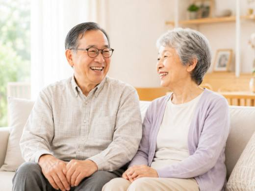
症状別のケア外反母趾など足の変形で歩きにくい方へ｜訪問鍼灸マッサージ痛み・タコ・かばい歩きに、家で寄り添う補助のケア続きを読む症状別のケア便秘やお腹の張りが続く方へ｜訪問鍼灸と受診の目安高齢者の便秘・お腹の張りと訪問でできること続きを読む
 症状別のケア円背と亀背の違いは？背中が丸くなる原因と、自宅でできるケア丸まった背中とこわばりを、家でやわらげる続きを読む
症状別のケア円背と亀背の違いは？背中が丸くなる原因と、自宅でできるケア丸まった背中とこわばりを、家でやわらげる続きを読む
 症状別のケア足のむくみに｜原因・受診の目安と訪問鍼灸マッサージ見逃したくないサインと自宅ケアの考え方続きを読む
症状別のケア足のむくみに｜原因・受診の目安と訪問鍼灸マッサージ見逃したくないサインと自宅ケアの考え方続きを読む
 症状別のケア都島区で膝の痛みにお悩みの方へ｜訪問鍼灸マッサージ立ち座り・歩き始め・階段がつらい方へ続きを読む
症状別のケア都島区で膝の痛みにお悩みの方へ｜訪問鍼灸マッサージ立ち座り・歩き始め・階段がつらい方へ続きを読む
 症状別のケア池田市で脳梗塞の後遺症ケア 訪問鍼灸マッサージ手足の麻痺・こわばりを家で整える在宅ケア続きを読む
症状別のケア箕面市で脳梗塞の後遺症ケア 訪問鍼灸マッサージ麻痺・こわばりの在宅ケアを箕面市へ続きを読む
症状別のケア池田市で脳梗塞の後遺症ケア 訪問鍼灸マッサージ手足の麻痺・こわばりを家で整える在宅ケア続きを読む
症状別のケア箕面市で脳梗塞の後遺症ケア 訪問鍼灸マッサージ麻痺・こわばりの在宅ケアを箕面市へ続きを読む
 症状別のケア摂津市でパーキンソン病の在宅ケアをお探しの方へ｜訪問鍼灸通院がつらい日も、住み慣れた家でこわばりを和らげる続きを読む
症状別のケア摂津市でパーキンソン病の在宅ケアをお探しの方へ｜訪問鍼灸通院がつらい日も、住み慣れた家でこわばりを和らげる続きを読む
 症状別のケア尼崎市で膝の痛みにお悩みの方へ｜訪問鍼灸で支える自宅で受ける膝ケアと受診の目安続きを読む
症状別のケア尼崎市で膝の痛みにお悩みの方へ｜訪問鍼灸で支える自宅で受ける膝ケアと受診の目安続きを読む
 症状別のケア東淀川区で腰の痛みにお悩みの方へ｜自宅で受ける訪問鍼灸通院がつらい高齢の方の腰のケアを在宅で続きを読む
症状別のケア東淀川区で腰の痛みにお悩みの方へ｜自宅で受ける訪問鍼灸通院がつらい高齢の方の腰のケアを在宅で続きを読む
 症状別のケア大阪市北区の坐骨神経痛・腰から足のしびれに訪問鍼灸通院がつらい方へ、家で受ける腰と脚のケア続きを読む
症状別のケア大阪市北区の坐骨神経痛・腰から足のしびれに訪問鍼灸通院がつらい方へ、家で受ける腰と脚のケア続きを読む
 症状別のケア旭区（大阪市）で膝の痛みにお悩みの方へ｜在宅で受ける訪問鍼灸立ち座り・歩き始めのつらさに、通わずできるケア続きを読む
症状別のケア旭区（大阪市）で膝の痛みにお悩みの方へ｜在宅で受ける訪問鍼灸立ち座り・歩き始めのつらさに、通わずできるケア続きを読む
 症状別のケア箕面市のパーキンソン病在宅ケアに訪問鍼灸自宅で受けるこわばりケアと費用の目安続きを読む
症状別のケア都島区で脳梗塞の後遺症ケアをお探しの方へ｜訪問鍼灸麻痺・こわばりに向き合う在宅ケア続きを読む
症状別のケア豊中市で五十肩・肩の痛みにお悩みの方へ｜自宅で受ける訪問鍼灸腕が上がらない・夜間痛に、通わず自宅で続きを読む
症状別のケア尼崎市で脳梗塞の後遺症のケアを｜自宅で続ける訪問鍼灸片麻痺・こわばりを在宅で続きを読む
症状別のケア淀川区の関節リウマチ 訪問鍼灸で痛み・こわばりケア手指のこわばり・関節の痛みに、ご自宅でのやさしいケア続きを読む
症状別のケア池田市の膝の痛みに｜立ち座り・歩き始めの訪問鍼灸マッサージ自宅で受ける、膝まわりのケアと機能訓練続きを読む
症状別のケア箕面市のパーキンソン病在宅ケアに訪問鍼灸自宅で受けるこわばりケアと費用の目安続きを読む
症状別のケア都島区で脳梗塞の後遺症ケアをお探しの方へ｜訪問鍼灸麻痺・こわばりに向き合う在宅ケア続きを読む
症状別のケア豊中市で五十肩・肩の痛みにお悩みの方へ｜自宅で受ける訪問鍼灸腕が上がらない・夜間痛に、通わず自宅で続きを読む
症状別のケア尼崎市で脳梗塞の後遺症のケアを｜自宅で続ける訪問鍼灸片麻痺・こわばりを在宅で続きを読む
症状別のケア淀川区の関節リウマチ 訪問鍼灸で痛み・こわばりケア手指のこわばり・関節の痛みに、ご自宅でのやさしいケア続きを読む
症状別のケア池田市の膝の痛みに｜立ち座り・歩き始めの訪問鍼灸マッサージ自宅で受ける、膝まわりのケアと機能訓練続きを読む
 症状別のケア大阪市北区で首肩こり・腕のしびれに｜自宅での訪問鍼灸北区で受ける在宅の首肩ケア続きを読む
症状別のケア大阪市北区で首肩こり・腕のしびれに｜自宅での訪問鍼灸北区で受ける在宅の首肩ケア続きを読む
 症状別のケア東淀川区でパーキンソン病の在宅ケア｜こわばりに訪問鍼灸上新庄・淡路・井高野など自宅で受ける在宅ケア続きを読む
症状別のケア摂津市で肩の痛み・五十肩に｜腕が上がらないつらさと訪問鍼灸自宅で受けられる肩まわりのケア続きを読む
症状別のケア伊丹市で坐骨神経痛にお悩みの方へ｜腰・足のしびれと訪問鍼灸お尻から足へ走る痛みに、自宅で受ける在宅ケア続きを読む
症状別のケア吹田市で脳梗塞の後遺症ケア｜麻痺・こわばりの訪問鍼灸手足の麻痺やこわばりに向き合う在宅ケア続きを読む
症状別のケア豊中市で膝の痛みにお悩みの方へ｜自宅で受ける訪問鍼灸立ち座り・歩き始め・階段のつらさに続きを読む
症状別のケア帯状疱疹後神経痛がつらい方へ｜訪問鍼灸マッサージという選択肢皮膚が治っても残る痛みと、家で受けるケア続きを読む
症状別のケア東淀川区でパーキンソン病の在宅ケア｜こわばりに訪問鍼灸上新庄・淡路・井高野など自宅で受ける在宅ケア続きを読む
症状別のケア摂津市で肩の痛み・五十肩に｜腕が上がらないつらさと訪問鍼灸自宅で受けられる肩まわりのケア続きを読む
症状別のケア伊丹市で坐骨神経痛にお悩みの方へ｜腰・足のしびれと訪問鍼灸お尻から足へ走る痛みに、自宅で受ける在宅ケア続きを読む
症状別のケア吹田市で脳梗塞の後遺症ケア｜麻痺・こわばりの訪問鍼灸手足の麻痺やこわばりに向き合う在宅ケア続きを読む
症状別のケア豊中市で膝の痛みにお悩みの方へ｜自宅で受ける訪問鍼灸立ち座り・歩き始め・階段のつらさに続きを読む
症状別のケア帯状疱疹後神経痛がつらい方へ｜訪問鍼灸マッサージという選択肢皮膚が治っても残る痛みと、家で受けるケア続きを読む
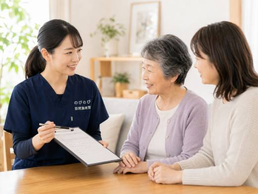
症状別のケア三叉神経痛など顔の痛みに｜自宅で受ける訪問鍼灸マッサージまず医療で診断、そのうえで自宅の補助ケア続きを読む 症状別のケアこむら返り（足がつる）がつらい方へ 訪問鍼灸マッサージ夜間・明け方のふくらはぎのつりに、家でできるケア続きを読む
症状別のケア夜よく眠れない方へ｜訪問鍼灸マッサージと眠り・自律神経眠りにくさの背景と、体のケアでできること続きを読む
症状別のケアこむら返り（足がつる）がつらい方へ 訪問鍼灸マッサージ夜間・明け方のふくらはぎのつりに、家でできるケア続きを読む
症状別のケア夜よく眠れない方へ｜訪問鍼灸マッサージと眠り・自律神経眠りにくさの背景と、体のケアでできること続きを読む
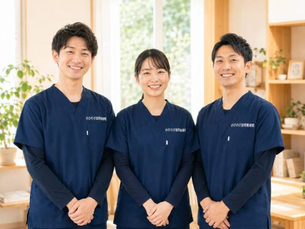
症状別のケアめまい・ふらつきで転倒が心配な方へ｜訪問鍼灸受診の見極めと、自宅でできる転倒予防のケア続きを読む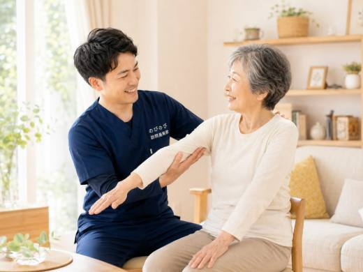
症状別のケア嚥下・むせが気になる方へ｜首のケアと訪問鍼灸マッサージ首肩のこわばりを和らげる補いのケア続きを読む 症状別のケア認知症の方の体のこわばり・痛みに｜訪問鍼灸マッサージ訪問鍼灸マッサージという寄り添い方続きを読む
症状別のケア認知症の方の体のこわばり・痛みに｜訪問鍼灸マッサージ訪問鍼灸マッサージという寄り添い方続きを読む
 症状別のケア吹田市で膝の痛みにお悩みの方へ｜自宅で受ける訪問鍼灸立ち座り・階段・歩き始めがつらい膝を在宅ケア続きを読む
症状別のケア神経痛は医療保険で受けられる？対象と料金1回3,950円坐骨・肋間・帯状疱疹後まで、保険適用の目安と料金続きを読む
症状別のケア腰痛症は保険で受けられる？訪問鍼灸の料金と受診の目安慢性腰痛症の保険適用と1回の費用がわかる続きを読む
症状別のケア吹田市で膝の痛みにお悩みの方へ｜自宅で受ける訪問鍼灸立ち座り・階段・歩き始めがつらい膝を在宅ケア続きを読む
症状別のケア神経痛は医療保険で受けられる？対象と料金1回3,950円坐骨・肋間・帯状疱疹後まで、保険適用の目安と料金続きを読む
症状別のケア腰痛症は保険で受けられる？訪問鍼灸の料金と受診の目安慢性腰痛症の保険適用と1回の費用がわかる続きを読む
 症状別のケアむち打ち後遺症が長引く方へ｜首肩の痛みと訪問鍼灸マッサージ慢性期の首肩・頭重感に医療保険の訪問施術続きを読む
症状別のケア茨木市のパーキンソン病 在宅ケアに訪問鍼灸マッサージ茨木市の自宅で受ける、暮らしを支える体のケア続きを読む
症状別のケア豊中市の坐骨神経痛・腰から足の痛み｜自宅で訪問鍼灸マッサージ通院がつらい方へ、家で受ける坐骨神経痛ケア続きを読む
症状別のケアむち打ち後遺症が長引く方へ｜首肩の痛みと訪問鍼灸マッサージ慢性期の首肩・頭重感に医療保険の訪問施術続きを読む
症状別のケア茨木市のパーキンソン病 在宅ケアに訪問鍼灸マッサージ茨木市の自宅で受ける、暮らしを支える体のケア続きを読む
症状別のケア豊中市の坐骨神経痛・腰から足の痛み｜自宅で訪問鍼灸マッサージ通院がつらい方へ、家で受ける坐骨神経痛ケア続きを読む
 症状別のケア背骨の圧迫骨折のあとの痛みとケア｜自宅で受ける訪問鍼灸マッサージ落ち着いた時期の痛み・こわばり・体力低下を自宅で支える続きを読む
症状別のケア背骨の圧迫骨折のあとの痛みとケア｜自宅で受ける訪問鍼灸マッサージ落ち着いた時期の痛み・こわばり・体力低下を自宅で支える続きを読む
 症状別のケア手のしびれ・手根管症候群｜親指〜中指のしびれに訪問鍼灸親指〜中指のしびれと夜間のつらさに寄り添う在宅ケア続きを読む
症状別のケア腰椎椎間板ヘルニアの足の痛み・しびれ｜高齢者の在宅ケア腰から足へ広がるつらさと在宅での支え方続きを読む
症状別のケア糖尿病の足のしびれ・冷えに｜訪問鍼灸マッサージとフットケア自宅でできる、足にやさしい鍼灸ケア続きを読む
症状別のケア脊柱管狭窄症の間欠性跛行に訪問鍼灸マッサージ｜足のしびれ間欠性跛行の慢性期を支える在宅ケアという選択肢続きを読む
症状別のケア首肩こり・腕のしびれに｜頸肩腕症候群の訪問鍼灸マッサージ首こり・腕しびれを自宅で続けるケア続きを読む
症状別のケア手のしびれ・手根管症候群｜親指〜中指のしびれに訪問鍼灸親指〜中指のしびれと夜間のつらさに寄り添う在宅ケア続きを読む
症状別のケア腰椎椎間板ヘルニアの足の痛み・しびれ｜高齢者の在宅ケア腰から足へ広がるつらさと在宅での支え方続きを読む
症状別のケア糖尿病の足のしびれ・冷えに｜訪問鍼灸マッサージとフットケア自宅でできる、足にやさしい鍼灸ケア続きを読む
症状別のケア脊柱管狭窄症の間欠性跛行に訪問鍼灸マッサージ｜足のしびれ間欠性跛行の慢性期を支える在宅ケアという選択肢続きを読む
症状別のケア首肩こり・腕のしびれに｜頸肩腕症候群の訪問鍼灸マッサージ首こり・腕しびれを自宅で続けるケア続きを読む
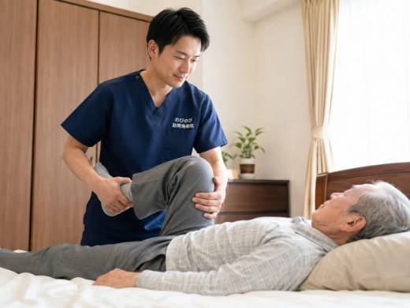
症状別のケア股関節の痛みで歩きづらい方へ｜変形性股関節症と訪問鍼灸通わずに続ける、股関節まわりのケア続きを読む症状別のケア関節リウマチの痛み・こわばりに｜自宅で受ける訪問鍼灸手指のこわばり・痛みを、通わず自宅でケア続きを読む
 症状別のケア手足のしびれ・冷えがつらい方へ 訪問鍼灸マッサージ家で温め、めぐりを整えるという続け方続きを読む
症状別のケアパーキンソン病の筋固縮・こわばり・ふるえに訪問鍼灸神経内科の治療と並行、通わずに続けるこわばりケア続きを読む
症状別のケア膝の痛みで立ち座りがつらい方へ 訪問鍼灸マッサージ変形性膝関節症のつらさに、通わず家でできるケア続きを読む
症状別のケア手足のしびれ・冷えがつらい方へ 訪問鍼灸マッサージ家で温め、めぐりを整えるという続け方続きを読む
症状別のケアパーキンソン病の筋固縮・こわばり・ふるえに訪問鍼灸神経内科の治療と並行、通わずに続けるこわばりケア続きを読む
症状別のケア膝の痛みで立ち座りがつらい方へ 訪問鍼灸マッサージ変形性膝関節症のつらさに、通わず家でできるケア続きを読む
 症状別のケア五十肩・肩の痛みで腕が上がらない方へ｜訪問鍼灸通わず自宅で受ける、肩のケア続きを読む
症状別のケア脳梗塞・脳出血の後遺症と訪問鍼灸｜退院後の在宅ケア片麻痺・こわばりを在宅で支える選択肢続きを読む
症状別のケア坐骨神経痛の方へ｜訪問鍼灸の費用（1回3,950円）腰から足の痛み・しびれを自宅でケア続きを読む
はじめての方へ感染症が流行する時期も安心｜訪問鍼灸マッサージの衛生対策かぜやインフルエンザなど感染症が流行する時期でも安心して受けられるよう、訪問鍼灸マッサージでは手洗い、手指消毒、換気、体調管理といった基本的な衛生対策を徹底し、自己負担は1割で約395円が目安です続きを読む
はじめての方へまた外を歩きたいを支える｜散歩・外出の目標づくりと訪問鍼灸また外を歩きたいという願いは、訪問鍼灸マッサージで散歩や外出の目標づくりから支えられます続きを読む
症状別のケア五十肩・肩の痛みで腕が上がらない方へ｜訪問鍼灸通わず自宅で受ける、肩のケア続きを読む
症状別のケア脳梗塞・脳出血の後遺症と訪問鍼灸｜退院後の在宅ケア片麻痺・こわばりを在宅で支える選択肢続きを読む
症状別のケア坐骨神経痛の方へ｜訪問鍼灸の費用（1回3,950円）腰から足の痛み・しびれを自宅でケア続きを読む
はじめての方へ感染症が流行する時期も安心｜訪問鍼灸マッサージの衛生対策かぜやインフルエンザなど感染症が流行する時期でも安心して受けられるよう、訪問鍼灸マッサージでは手洗い、手指消毒、換気、体調管理といった基本的な衛生対策を徹底し、自己負担は1割で約395円が目安です続きを読む
はじめての方へまた外を歩きたいを支える｜散歩・外出の目標づくりと訪問鍼灸また外を歩きたいという願いは、訪問鍼灸マッサージで散歩や外出の目標づくりから支えられます続きを読む
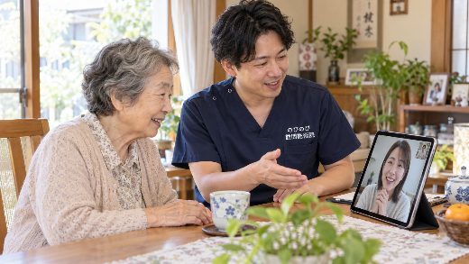
はじめての方へ離れて暮らす親が心配な方へ｜訪問鍼灸の見守りと連携訪問鍼灸マッサージは、体をいたわるだけでなく、離れて暮らすご家族のための見守りの役割も果たせます続きを読む はじめての方へ老老介護を支える｜高齢の介護者の体と訪問鍼灸マッサージ高齢のご夫婦や、親と高齢の子が支え合う「老老介護」では、介護する側もされる側も体に無理がたまりがちです続きを読む
はじめての方へ訪問マッサージと訪問整体は何が違う？資格・保険・選び方「訪問マッサージ」と「訪問整体」は名前が似ていますが、いちばんの違いは資格と保険です続きを読む
はじめての方へ高齢者へのマッサージのやり方と禁忌｜家族が安全に行うために家族のふれあいと、プロのケアの使い分け続きを読む
はじめての方へ在宅サービスの違い早見表｜役割と保険の枠を一覧で整理訪問診療・看護・リハビリ・介護・鍼灸マッサージの役割と保険続きを読む
はじめての方へ訪問マッサージと訪問鍼灸の違い｜はり・きゅう・手技の使い分け在宅の施術は2つの制度に分かれます。鍼・お灸・手技の特徴と、訪問での組み合わせ方続きを読む
はじめての方へ老老介護を支える｜高齢の介護者の体と訪問鍼灸マッサージ高齢のご夫婦や、親と高齢の子が支え合う「老老介護」では、介護する側もされる側も体に無理がたまりがちです続きを読む
はじめての方へ訪問マッサージと訪問整体は何が違う？資格・保険・選び方「訪問マッサージ」と「訪問整体」は名前が似ていますが、いちばんの違いは資格と保険です続きを読む
はじめての方へ高齢者へのマッサージのやり方と禁忌｜家族が安全に行うために家族のふれあいと、プロのケアの使い分け続きを読む
はじめての方へ在宅サービスの違い早見表｜役割と保険の枠を一覧で整理訪問診療・看護・リハビリ・介護・鍼灸マッサージの役割と保険続きを読む
はじめての方へ訪問マッサージと訪問鍼灸の違い｜はり・きゅう・手技の使い分け在宅の施術は2つの制度に分かれます。鍼・お灸・手技の特徴と、訪問での組み合わせ方続きを読む
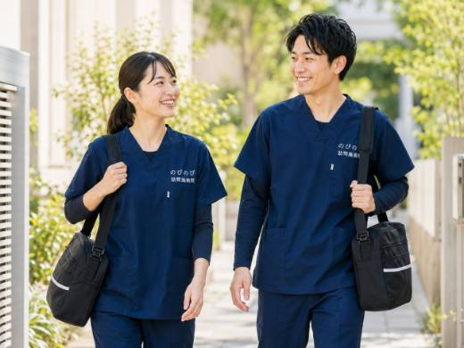
はじめての方へ症状が落ち着いたらやめられる？訪問鍼灸を続ける期間の考え方やめどき・回数・続ける意味を正直に続きを読む はじめての方へ予約のキャンセル・日程変更をしたいとき｜訪問鍼灸体調や予定に合わせて、無理なく調整できます続きを読む
はじめての方へ予約のキャンセル・日程変更をしたいとき｜訪問鍼灸体調や予定に合わせて、無理なく調整できます続きを読む
 はじめての方へ訪問診療・往診と訪問鍼灸マッサージの違いと組み合わせ方医師の医療と鍼灸のケア、無理なく併用するために続きを読む
はじめての方へ訪問鍼灸マッサージ、当日の準備と立ち会いは？｜はじめての方へはじめての日を気負わず迎えるために続きを読む
はじめての方へ訪問診療・往診と訪問鍼灸マッサージの違いと組み合わせ方医師の医療と鍼灸のケア、無理なく併用するために続きを読む
はじめての方へ訪問鍼灸マッサージ、当日の準備と立ち会いは？｜はじめての方へはじめての日を気負わず迎えるために続きを読む
 はじめての方へ訪問鍼灸マッサージと出張・リラクゼーションの違い｜資格と保険決め手は「国家資格」と「医療保険」の二つ続きを読む
はじめての方へ訪問鍼灸マッサージと出張・リラクゼーションの違い｜資格と保険決め手は「国家資格」と「医療保険」の二つ続きを読む
 はじめての方へ訪問鍼灸マッサージに年齢制限はある？何歳から受けられる？上限も下限もなし。条件は症状と通院のしづらさ続きを読む
はじめての方へ訪問鍼灸マッサージに年齢制限はある？何歳から受けられる？上限も下限もなし。条件は症状と通院のしづらさ続きを読む
 はじめての方へ訪問鍼灸の施術者は毎回同じ人？女性は選べる？担当・女性希望・資格への疑問に正直に続きを読む
はじめての方へ訪問鍼灸マッサージは1回どれくらい？施術時間の目安1回20〜30分が目安。当日の流れと準備をやさしく解説続きを読む
はじめての方へ訪問鍼灸の施術者は毎回同じ人？女性は選べる？担当・女性希望・資格への疑問に正直に続きを読む
はじめての方へ訪問鍼灸マッサージは1回どれくらい？施術時間の目安1回20〜30分が目安。当日の流れと準備をやさしく解説続きを読む
 はじめての方へ訪問鍼灸マッサージは土日・祝日・夜間も可？対応時間と予約曜日・時間の決め方と予約の考え方続きを読む
はじめての方へペースメーカーや持病があっても鍼灸は受けられる？持病・お薬・医療機器を伝えて安全に受けるコツ続きを読む
はじめての方へ訪問鍼灸の施術者は国家資格？はり師・きゅう師をわかりやすく家に来るのは、国家試験に受かった専門家続きを読む
はじめての方へ訪問鍼灸マッサージは土日・祝日・夜間も可？対応時間と予約曜日・時間の決め方と予約の考え方続きを読む
はじめての方へペースメーカーや持病があっても鍼灸は受けられる？持病・お薬・医療機器を伝えて安全に受けるコツ続きを読む
はじめての方へ訪問鍼灸の施術者は国家資格？はり師・きゅう師をわかりやすく家に来るのは、国家試験に受かった専門家続きを読む
 はじめての方へ訪問鍼灸マッサージの頻度は週何回、1回何分？時間と回数の目安週1〜3回・1回20〜30分の考え方続きを読む
はじめての方へ訪問鍼灸マッサージの頻度は週何回、1回何分？時間と回数の目安週1〜3回・1回20〜30分の考え方続きを読む
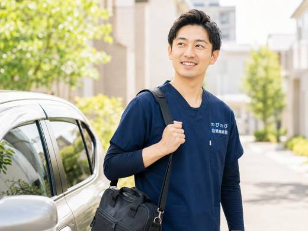
はじめての方へ病院でよくならないと言われた方へ｜在宅の訪問鍼灸マッサージ『治す』から『保つ・やわらげる』へ、視点を少し移すという提案続きを読む はじめての方へ訪問看護・訪問リハビリ・訪問鍼灸マッサージの違いと使い分け来る人・すること・使う保険で見分け、必要に応じて重ねて使う続きを読む
はじめての方へ訪問看護・訪問リハビリ・訪問鍼灸マッサージの違いと使い分け来る人・すること・使う保険で見分け、必要に応じて重ねて使う続きを読む
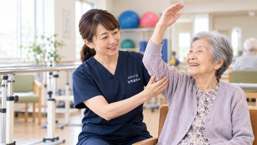
はじめての方へデイサービスを嫌がる親に、自宅で受けられるケアという選択肢デイと併用も、かわりに在宅でも選べます続きを読むはじめての方へ「まだ大丈夫」のうちに｜歩けなくなる前に始める在宅ケアの価値「まだ大丈夫」のうちに考えたいこと続きを読む
はじめての方へ親が訪問施術を嫌がる・遠慮するときの、無理のない始め方ご本人の気持ちを大切にした始め方続きを読む
はじめての方へ再入院を防ぐ在宅ケア｜退院後に体力・関節を落とさないために退院後の数週間を、家でどう過ごすか続きを読む
 はじめての方へ訪問鍼灸マッサージ院の選び方｜家族が確かめたい点国家資格・料金・連携で見極める安心の判断材料続きを読む
はじめての方へ一人暮らし（独居）でも訪問鍼灸マッサージは受けられる？独居でも続けられる、家族への様子共有まで続きを読む
はじめての方へ訪問鍼灸マッサージの申し込みに必要な書類とそろえ方健康保険証と同意書、はじめの段取り続きを読む
はじめての方へ訪問鍼灸マッサージは開始まで何日？申し込みから開始の流れ相談から施術開始までの日数の目安続きを読む
はじめての方へ訪問鍼灸マッサージ院の選び方｜家族が確かめたい点国家資格・料金・連携で見極める安心の判断材料続きを読む
はじめての方へ一人暮らし（独居）でも訪問鍼灸マッサージは受けられる？独居でも続けられる、家族への様子共有まで続きを読む
はじめての方へ訪問鍼灸マッサージの申し込みに必要な書類とそろえ方健康保険証と同意書、はじめの段取り続きを読む
はじめての方へ訪問鍼灸マッサージは開始まで何日？申し込みから開始の流れ相談から施術開始までの日数の目安続きを読む
 はじめての方へ訪問鍼灸は効果があるの？怪しくない？施術者が正直に期待できること・できないことを包み隠さず続きを読む
はじめての方へ訪問鍼灸マッサージのデメリットは？正直に書く注意点と対策短所も隠さず、備え方まで続きを読む
はじめての方へ訪問鍼灸マッサージと整骨院・整体・マッサージ店の違い資格・保険・訪問の3点でわかる選び方続きを読む
はじめての方へ訪問鍼灸と訪問リハビリの違いは？選び方・併用を解説職種・目的・保険・費用のちがいを中立に整理続きを読む
はじめての方へ訪問鍼灸は効果があるの？怪しくない？施術者が正直に期待できること・できないことを包み隠さず続きを読む
はじめての方へ訪問鍼灸マッサージのデメリットは？正直に書く注意点と対策短所も隠さず、備え方まで続きを読む
はじめての方へ訪問鍼灸マッサージと整骨院・整体・マッサージ店の違い資格・保険・訪問の3点でわかる選び方続きを読む
はじめての方へ訪問鍼灸と訪問リハビリの違いは？選び方・併用を解説職種・目的・保険・費用のちがいを中立に整理続きを読む
 はじめての方へ鍼は痛い？お灸は熱い？初めての方の不安にお答えします初めてでも無理なく受けられる理由続きを読む
はじめての方へ初めての方へ｜訪問鍼灸マッサージの申し込みから施術までの流れ相談から初回訪問まで、はじめての手順を順番に続きを読む
はじめての方へ訪問鍼灸マッサージは誰が受けられる？対象者の条件を整理対象・条件をやさしく解説するハブページ続きを読む
はじめての方へ鍼は痛い？お灸は熱い？初めての方の不安にお答えします初めてでも無理なく受けられる理由続きを読む
はじめての方へ初めての方へ｜訪問鍼灸マッサージの申し込みから施術までの流れ相談から初回訪問まで、はじめての手順を順番に続きを読む
はじめての方へ訪問鍼灸マッサージは誰が受けられる？対象者の条件を整理対象・条件をやさしく解説するハブページ続きを読む
 はじめての方へ訪問鍼灸マッサージとは？対象・料金・流れがわかる大阪ガイド大阪・北摂・阪神間で自宅ケアを探す方へ続きを読む
料金・保険・制度受領委任と償還払いの違いは？訪問鍼灸マッサージの支払い訪問鍼灸マッサージを医療保険で受けるとき、支払いのしくみには「受領委任」と「償還払い」の2つがあります続きを読む
料金・保険・制度医師の同意書は何科でもらえる？｜内科でも訪問診療の先生でも訪問鍼灸マッサージを医療保険で受けるには医師の同意書が必要ですが、「何科の先生に頼めばいいの？」と迷う方はとても多いです続きを読む
料金・保険・制度変形徒手矯正術とは？関節の拘縮へのマッサージと同意書変形徒手矯正術は、関節が固まって動きにくくなった状態（拘縮）に対して、医師の同意にもとづく医療保険（あん摩マッサージの療養費）のなかで行える施術です続きを読む
料金・保険・制度引っ越し・保険証が変わったときは？訪問鍼灸を続ける手続き生活の変化があっても続けるための切り替えガイド続きを読む
料金・保険・制度訪問マッサージに交通費・往療料はかかる？費用のギモンエリア内は別途の出張費なし。1回の総額3,950円に訪問の費用が含まれます続きを読む
料金・保険・制度デイサービスや通所リハと訪問鍼灸は併用できる？｜介護保険別枠だから追加できる、一週間の組み方続きを読む
料金・保険・制度訪問鍼灸はケアマネジャーに相談したほうがいい？許可は不要。でも一言の共有が、日々の見守りを楽にします続きを読む
はじめての方へ訪問鍼灸マッサージとは？対象・料金・流れがわかる大阪ガイド大阪・北摂・阪神間で自宅ケアを探す方へ続きを読む
料金・保険・制度受領委任と償還払いの違いは？訪問鍼灸マッサージの支払い訪問鍼灸マッサージを医療保険で受けるとき、支払いのしくみには「受領委任」と「償還払い」の2つがあります続きを読む
料金・保険・制度医師の同意書は何科でもらえる？｜内科でも訪問診療の先生でも訪問鍼灸マッサージを医療保険で受けるには医師の同意書が必要ですが、「何科の先生に頼めばいいの？」と迷う方はとても多いです続きを読む
料金・保険・制度変形徒手矯正術とは？関節の拘縮へのマッサージと同意書変形徒手矯正術は、関節が固まって動きにくくなった状態（拘縮）に対して、医師の同意にもとづく医療保険（あん摩マッサージの療養費）のなかで行える施術です続きを読む
料金・保険・制度引っ越し・保険証が変わったときは？訪問鍼灸を続ける手続き生活の変化があっても続けるための切り替えガイド続きを読む
料金・保険・制度訪問マッサージに交通費・往療料はかかる？費用のギモンエリア内は別途の出張費なし。1回の総額3,950円に訪問の費用が含まれます続きを読む
料金・保険・制度デイサービスや通所リハと訪問鍼灸は併用できる？｜介護保険別枠だから追加できる、一週間の組み方続きを読む
料金・保険・制度訪問鍼灸はケアマネジャーに相談したほうがいい？許可は不要。でも一言の共有が、日々の見守りを楽にします続きを読む
 料金・保険・制度要介護認定なしでも訪問鍼灸マッサージは受けられる？必要な二つの条件と、介護保険との関係を、費用まで含めて整理します続きを読む
料金・保険・制度訪問鍼灸マッサージは月いくら？ケース別料金ガイド回数と負担割合で、毎月の費用は見通せます続きを読む
料金・保険・制度要介護認定なしでも訪問鍼灸マッサージは受けられる？必要な二つの条件と、介護保険との関係を、費用まで含めて整理します続きを読む
料金・保険・制度訪問鍼灸マッサージは月いくら？ケース別料金ガイド回数と負担割合で、毎月の費用は見通せます続きを読む
 料金・保険・制度介護保険の限度額がいっぱいでも足せる医療保険の訪問鍼灸限度額の外側で足せる、もう一手続きを読む
料金・保険・制度サービス担当者会議での訪問鍼灸とケアプラン記載の実務ケアプラン記載と連携の実務続きを読む
料金・保険・制度介護保険の限度額がいっぱいでも足せる医療保険の訪問鍼灸限度額の外側で足せる、もう一手続きを読む
料金・保険・制度サービス担当者会議での訪問鍼灸とケアプラン記載の実務ケアプラン記載と連携の実務続きを読む
 料金・保険・制度要支援・総合事業で減った方へ｜医療保険の訪問鍼灸マッサージ介護保険とは別枠の、医療保険という選択肢続きを読む
料金・保険・制度特養・サ高住・有料ホームでも訪問鍼灸マッサージは受けられる？有料・サ高住・特養・グループホーム・老健まで種別ごとに整理続きを読む
料金・保険・制度鍼灸の同意書を書いてもらえないとき｜断られる理由と次の一手断られても、次の一手はまだあります続きを読む
料金・保険・制度生活保護で訪問鍼灸マッサージ｜医療扶助での受け方と相談の流れ医療扶助での受け方と手続きの段取り続きを読む
料金・保険・制度要支援・総合事業で減った方へ｜医療保険の訪問鍼灸マッサージ介護保険とは別枠の、医療保険という選択肢続きを読む
料金・保険・制度特養・サ高住・有料ホームでも訪問鍼灸マッサージは受けられる？有料・サ高住・特養・グループホーム・老健まで種別ごとに整理続きを読む
料金・保険・制度鍼灸の同意書を書いてもらえないとき｜断られる理由と次の一手断られても、次の一手はまだあります続きを読む
料金・保険・制度生活保護で訪問鍼灸マッサージ｜医療扶助での受け方と相談の流れ医療扶助での受け方と手続きの段取り続きを読む
 料金・保険・制度鍼灸で医療保険が使える症状｜代表6つと料金・自己負担の目安訪問鍼灸で保険が使える症状と費用の早わかり続きを読む
料金・保険・制度訪問鍼灸マッサージの料金は？保険なら1回約395円から自己負担と月額の目安をまるごと解説続きを読む
料金・保険・制度鍼灸で医療保険が使える症状｜代表6つと料金・自己負担の目安訪問鍼灸で保険が使える症状と費用の早わかり続きを読む
料金・保険・制度訪問鍼灸マッサージの料金は？保険なら1回約395円から自己負担と月額の目安をまるごと解説続きを読む
 料金・保険・制度訪問鍼灸マッサージの同意書｜かかりつけ医への頼み方と流れ取得の流れと、医師への頼み方続きを読む
料金・保険・制度訪問鍼灸マッサージの保険と自費の違い｜対象・料金を整理医療保険と自費、二つの受け方を中立に比較続きを読む
料金・保険・制度訪問鍼灸マッサージの同意書｜かかりつけ医への頼み方と流れ取得の流れと、医師への頼み方続きを読む
料金・保険・制度訪問鍼灸マッサージの保険と自費の違い｜対象・料金を整理医療保険と自費、二つの受け方を中立に比較続きを読む
 料金・保険・制度訪問鍼灸は医療保険？介護保険？上手な併用のしかた医療保険で受ける在宅ケアと介護保険との違い続きを読む
料金・保険・制度訪問鍼灸は医療保険？介護保険？上手な併用のしかた医療保険で受ける在宅ケアと介護保険との違い続きを読む
 エリア別訪問鍼灸マッサージの対応エリア・範囲はどこまで？大阪府北部・大阪市の一部・兵庫県の対応地域続きを読む
エリア別旭区の訪問鍼灸マッサージ｜骨折・入院後の体を家で立て直す通院がむずかしい方の自宅へ、保険で伺う在宅ケア続きを読む
エリア別大阪市北区の訪問鍼灸マッサージ 都心の自宅で首肩ケア通院がつらい北区の在宅高齢者へ、保険で受ける首肩ケア続きを読む
エリア別大阪市都島区の訪問鍼灸マッサージ｜家までケアを届けます通院が難しい方の自宅へ、保険で伺うはり・きゅう続きを読む
エリア別大阪市東淀川区の訪問鍼灸｜通院がつらい膝・関節の痛みに医師の同意で受ける在宅の保険ケア続きを読む
エリア別訪問鍼灸マッサージの対応エリア・範囲はどこまで？大阪府北部・大阪市の一部・兵庫県の対応地域続きを読む
エリア別旭区の訪問鍼灸マッサージ｜骨折・入院後の体を家で立て直す通院がむずかしい方の自宅へ、保険で伺う在宅ケア続きを読む
エリア別大阪市北区の訪問鍼灸マッサージ 都心の自宅で首肩ケア通院がつらい北区の在宅高齢者へ、保険で受ける首肩ケア続きを読む
エリア別大阪市都島区の訪問鍼灸マッサージ｜家までケアを届けます通院が難しい方の自宅へ、保険で伺うはり・きゅう続きを読む
エリア別大阪市東淀川区の訪問鍼灸｜通院がつらい膝・関節の痛みに医師の同意で受ける在宅の保険ケア続きを読む
 エリア別池田市の訪問鍼灸マッサージ｜通院がつらい方へ自宅で医師の同意書で医療保険が使える在宅ケア続きを読む
エリア別淀川区の訪問鍼灸マッサージ｜十三・新大阪の痛み・しびれケア外出や通院が負担な方へ、家で続ける保険の施術続きを読む
エリア別池田市の訪問鍼灸マッサージ｜通院がつらい方へ自宅で医師の同意書で医療保険が使える在宅ケア続きを読む
エリア別淀川区の訪問鍼灸マッサージ｜十三・新大阪の痛み・しびれケア外出や通院が負担な方へ、家で続ける保険の施術続きを読む
 エリア別伊丹市の訪問鍼灸マッサージ｜住み慣れた家でケアを続ける膝痛・坐骨神経痛・脳梗塞後のこわばりに、自宅で続きを読む
エリア別尼崎市の訪問鍼灸マッサージ 通わず受ける保険のケア尼崎市内全域へ、国家資格者がご自宅・施設まで続きを読む
エリア別摂津市の訪問鍼灸マッサージ｜通院がつらい方の腰・足のケア千里丘・正雀・鳥飼まで摂津市内全域へ続きを読む
エリア別箕面市の訪問鍼灸マッサージ｜通わず住み慣れた家で箕面市内どこでも同額、保険で続ける在宅ケア続きを読む
エリア別伊丹市の訪問鍼灸マッサージ｜住み慣れた家でケアを続ける膝痛・坐骨神経痛・脳梗塞後のこわばりに、自宅で続きを読む
エリア別尼崎市の訪問鍼灸マッサージ 通わず受ける保険のケア尼崎市内全域へ、国家資格者がご自宅・施設まで続きを読む
エリア別摂津市の訪問鍼灸マッサージ｜通院がつらい方の腰・足のケア千里丘・正雀・鳥飼まで摂津市内全域へ続きを読む
エリア別箕面市の訪問鍼灸マッサージ｜通わず住み慣れた家で箕面市内どこでも同額、保険で続ける在宅ケア続きを読む
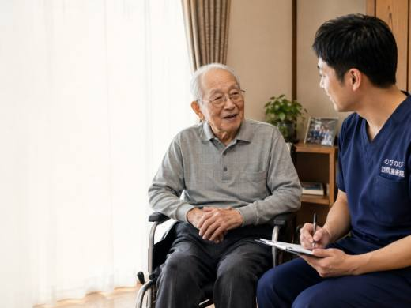
エリア別茨木市の訪問マッサージ・訪問鍼灸｜通わず自宅で痛み・しびれケア茨木市全域へ、国家資格者が訪問続きを読むエリア別吹田市の訪問鍼灸マッサージ｜自宅で通わず続けるケア通院がつらくなった方の自宅へ、国家資格者が伺う続きを読む
エリア別豊中市の訪問鍼灸マッサージ｜住み慣れた家で、体のケアを続ける通院がつらくなっても、住み慣れた家で受けられる続きを読む
該当する記事が見つかりませんでした。
別のことばでお試しください。